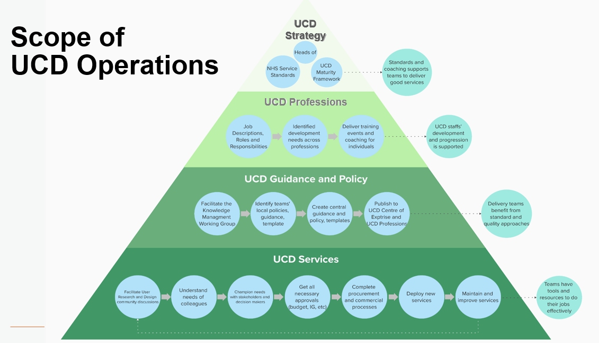
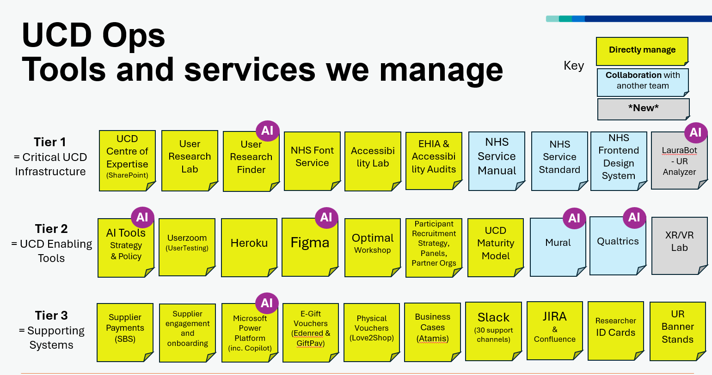
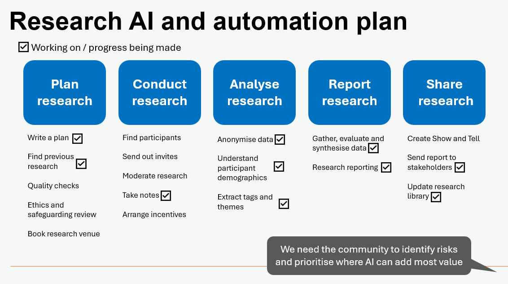

UCD Ops & AI-Enabled User Researchers
Following on from last monthnote about building a User Research Finder, this monthnote is continues along the theme of AI usage at NHS England.
What is UCD Ops?
One of the biggest challenges we have is that outside our immediate colleagues, teams and stakeholders, among the wider organisation User-Centred Design (UCD) Ops (Research + Design Ops) is not that well understood.
In brief, UCD Ops includes all the infrastructure that underpins quality, productivity for the whole User-Centred Design profession and, utlimately, enabling the successful delivery of Digital Data and Tech projects.

We are highly-collaborative team and work closely with our Heads of Profession on the UCD Strategy, this influences and directs how teams across the organisation work.
We work very closely with our community to understand their needs and resolve those. This may be through onboarding, training, coaching, procurement of software, hardware, or building inhouse solutions.
We connect the dots between all the internal functions: Tech, IG, Finance, Commercial, Procurement, Estates, Cyber, Comms, and more. We navigate all the gateways to bring forward the best solutions for our colleagues.
There are big challenges our team have been facing in the last two years: budget cuts, reduced headcount, increased number of projects, increased complexity of projects, decreased wellbeing.
Our tiny team already manage around 30 live products and services. As delivery teams cut back on staff too, there is increased pressure to take on (even) more centrally.

Re-Ops Conference
It was fabulous to attend the first ReOps Conference in London this week, hosted by the Gov.uk team.
It was clear that ReOps and UCD Ops teams are innately impactful within their organisations, though massively undervalued. There are some new Ops teams emerging, and some mature teams that are creaking in the winds of change.
We have lots to share, and lots to learn too.
AI-first and Automation strategy
AI and automation are the number one topic now. In every team, and nearly every funding request.
Earlier this year, Keir Starmer stated that:
No person’s substantive time should be spent on a task where digital or AI can do it better, quicker and to the same high quality and standard.
While the adoption of AI promises to transform how every team in the NHS works, modernising and standardising our processes, automating tedious tasks, it is not necessarily a quick win.
We are leaning into AI, but AI might add more pressure: We have to learn / retrain, while still deliver the day job.
We have been working with our research community to understand where AI can help most with tasks. And experimenting with a variety of AI-enabled tools and services.
This approach is not without risks, AI can be fickle, biased, or hallucinate… we are working closely with the UCD community to document and mitigate risks.

User Research Finder
After completing the second round of research about our AI-powered UR Finder, we’ve received some great feedback.
My favourite quote of the month came up in our UR Finder Onboarding research.
“…the aliens are already here… they are in the room… and they are actually really useful!”
To increase awareness, we’re working on more comms efforts to increase uptake and also attending a variety of events and speaking with colleagues in X-Gov departments and at conferences to share our learnings. We now have a demo video!!
There is still much more to do to support UR Finder adoption, it could take months or maybe a year… but we will get there.
Our teams are enthusiastic but also concerned about what happens with data upload. Tribal type fears. Teams worry about losing control of communications, who has access to their research? What if they get cut out of the conversation about the findings?
Who cares? Sharing is caring.
All the publicly-funded research should be available to all our stakeholders and teams.
Stopping teams needing to “re-do” the same discoveries could easily save the NHS £50,000-£500,000 each time, or the annual cost of say 5-10 frontline staff.
The AI-first debate
Teams are reporting, that if they want to get funding, they need to prioritise AI-enabled solutions
Every product team wants to be more empathetic, customer-centric, user-centred, human. But how do we create efficiency and be more human at the same time?
Well over in the consultancy sector, staff who ‘can’t be retrained’ to work with AI are getting cut at a rapid pace… see Accenture AI workforce plan
This strategy is not at all without risk. Another consultancy was recently fined for an AI-produced reports that was factually incorrect Deloitte AI hallucinations report
This is what happens when the “move fast and break things” mantra, is applied by AI to people, cultures and norms.
AI-enabled researchers will drive our transformation over the next 10 years
What is an AI-enabled researcher?
I feel there is a sweet-space somewhere between the User Research and Data-Science professions.
Where staff have a deep understanding of quantitative and qualitative research methods, they are able to gather high-quality primary data, and they are also able to implement ai workflows and technical solutions (think: big databases, analytics dashboards, automated insights reports).
AI-enabled researchers, will focus on:
Learning - As AI is always evolving, it encourages continuous learning, being flexible and focusing on delivering the best solution with a range of options
Relations - AI-enabled researchers, will have more time to focus on building relationships with their stakeholders, customers or product users.
Quality - Standards, templates and operating procedures are needed for most tasks
Scale - once a workflow is deloyed (build once), it can be repeated endlessly
Accuracy - AI/LLMs can analyse and summarise the data accurately, in near-instant fashion
Input - the focus of the researcher will be controlling the content quality that goes in, not producing outputs as AI can do that easily
Integration - AI-enabled researchers can connect dots in business processes, find solutions that speed up end-to-end workflows
Automation - Feedback and reports will be automated and flag emerging issues to the right channels
What does this mean for specialist roles?
The dust is starting to settle since ChatGPT launched… the rollout of Copilot is only growing.
In our Copilot Cafes we’re seeing nurses dabbling with data, python, video production. Exciting times.
Among this rapid upskilling (e.g. infinite access to coding, content creation…) there is a break-down of traditionally siloed roles. Tasks that would previously be done by colleagues within specialisms: data, developers, comms, designers, researchers, etc.
It can be quicker to ask an AI assistants to support (or do the thing), than it is to find someone specialist with capacity to deliver the work.
The bigger question is… are workforce planning teams aware of this? Are they looking into how job descriptions might need to evolve, and be extended to consider multi-disclipinary nature? There is an higher technical complexity for many roles in the age of ai-empowered employees.
We know that many colleagus are now doing much more than their core role. Maybe “T-shaped people” will be a thing of the past?
JDs doesn’t represent half the new scope of the role and skills required to be successful and may be need to consider “Tree” shaped people the new thing.
Broad general management, leadership and business knowledge in the leaves at the top.
A thick trunk representing their deep specialist area or areas of knowledge.
Underpinned by strong roots… understanding of AI and tech… with knowledge and confidence to collaborate with AIs, and constant desire to grow (retrain) on the job.
The next AI-gen emplowers will be like a toolkit full of Swiss-army-knives. The challenge for leaders and managers will be agreeing who does what work, in an environment where everyone can do almost everything.
Changing cultures and the way we work
For the researchers, and their wider team, they won’t need a team to document notes, or update a virtual whiteboard after every research call.
They won’t need to sit and manually review and analyse research notes that were taken either.
But speeding up analysis with AI does change the culture too:
It takes away some fun and the collective spirit of conducting research together
It risks introducing bias, that the AI will provide duff recommendations
It increases expectations with our stakeholders, that research is a commodity
However, given the operating context to drive towards AI, that teams are under so much pressure to deliver they might not have a choice.
It is almost inevitable that teams will need to lean into AI-solutions to achieve their objectives. So, if AI-enabled user research in inevitable, questions we need to consider:
- Do we want to hire (a team of consultant experts) to do this? (at a great cost)
- Do we need premium tools to support us? (how much, are they safe?)
- Do we have tools in-house? (or anyone skilled to deploy them?)
There is a lot to be decided on AI-policy and guidance; it feels like more guardrails can’t come soon enough.
Big running update
After four months of training, and over a year waiting since I decided to enter a Marathon, I finally achieved running my first Marathon in York at the week.
Despite injuries in the months and weeks leading up to the race, I carried on all my prep and hoped to be well.
On the day, I was nervous but after the first 5 miles I felt strong and pushed on and on. At 21 miles I nearly cracked but was dragged round to the end.
I finished the Yorkshire Marathon with a time of 3 hours 24 minutes 51 seconds, a time I was delighted with.
Will I run another Marathon? Yeah, hopefully one day.